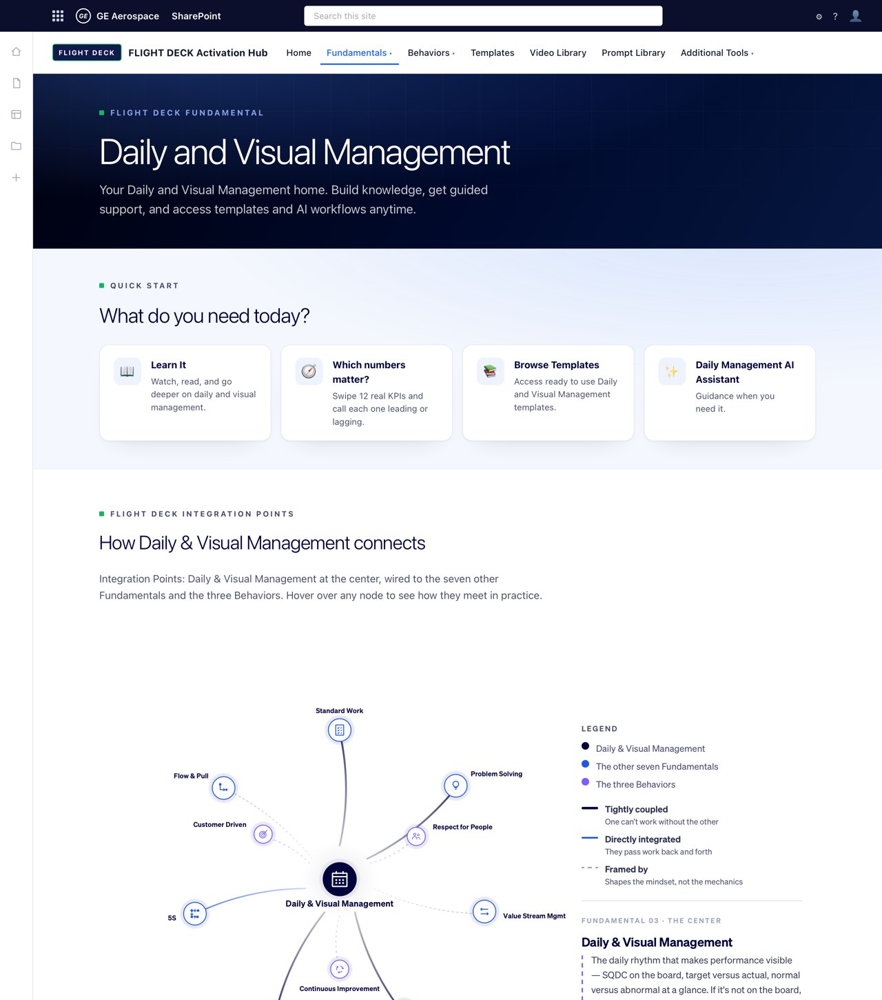
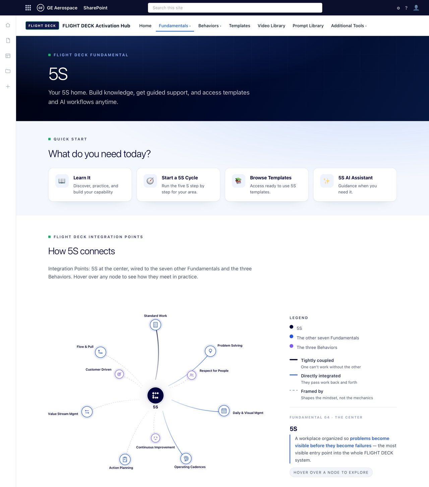
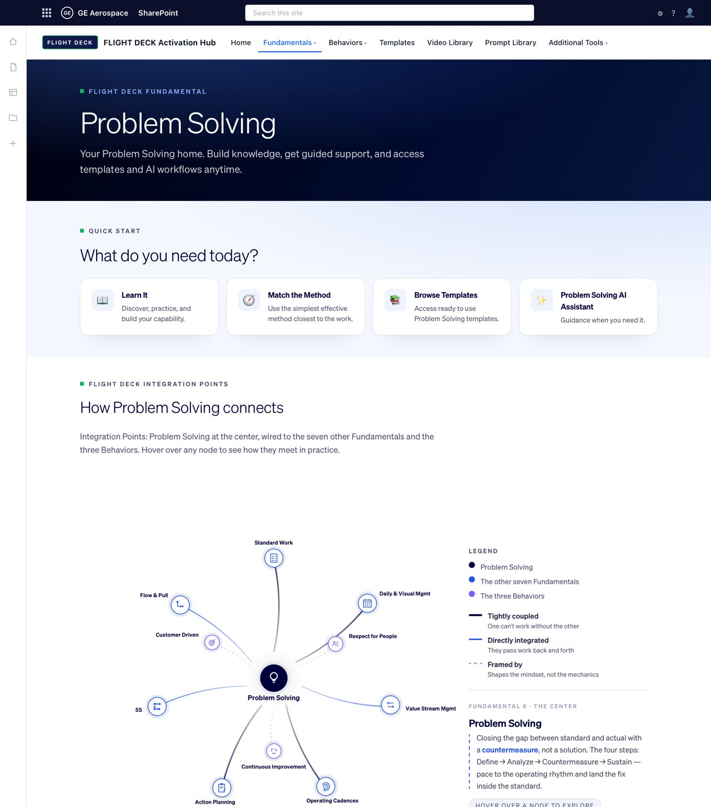
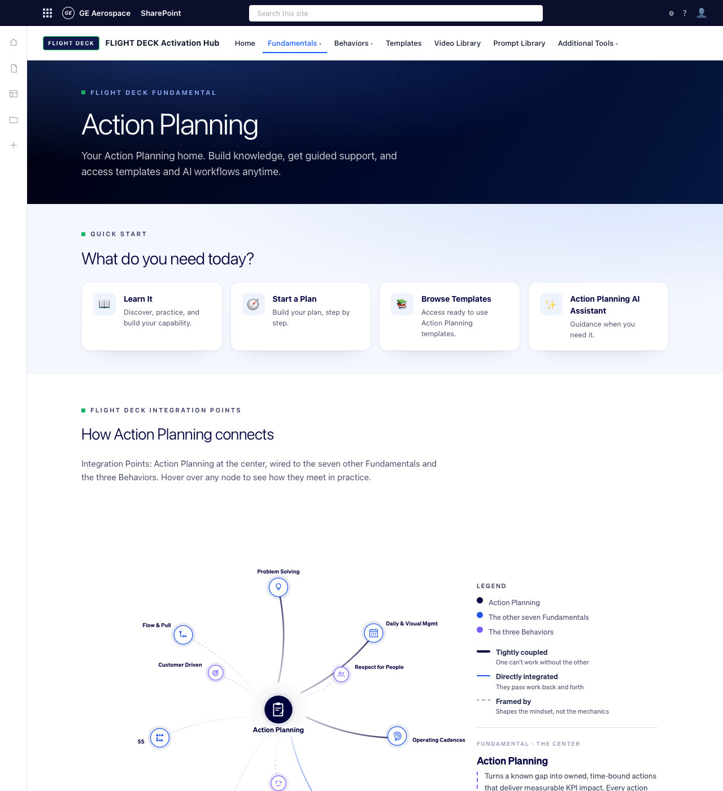
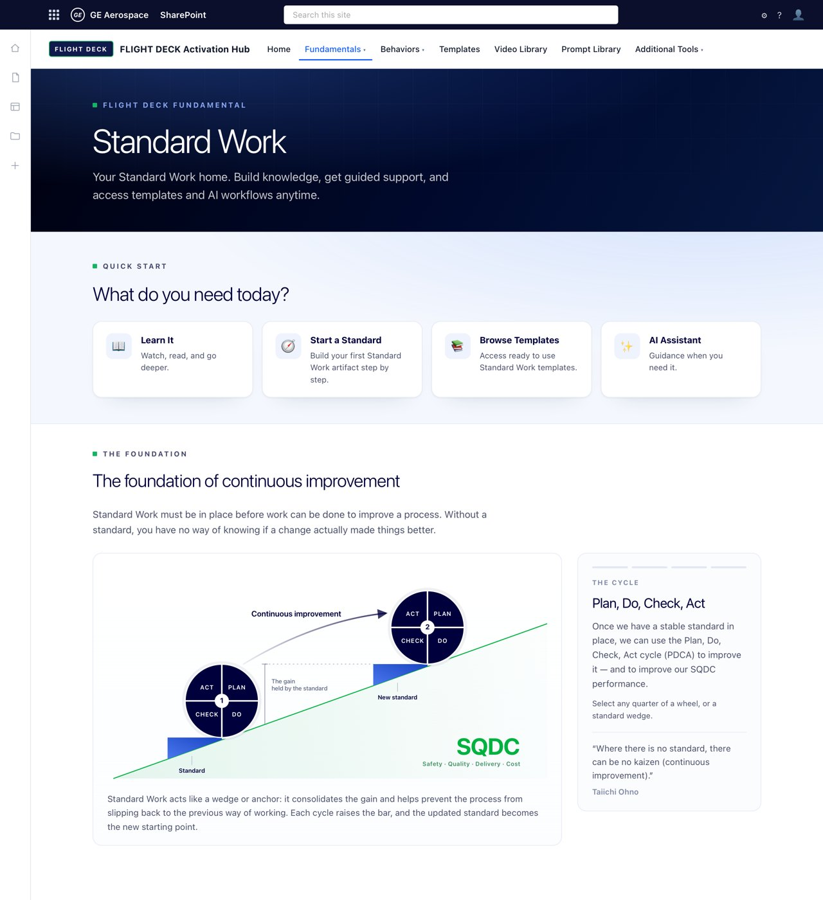
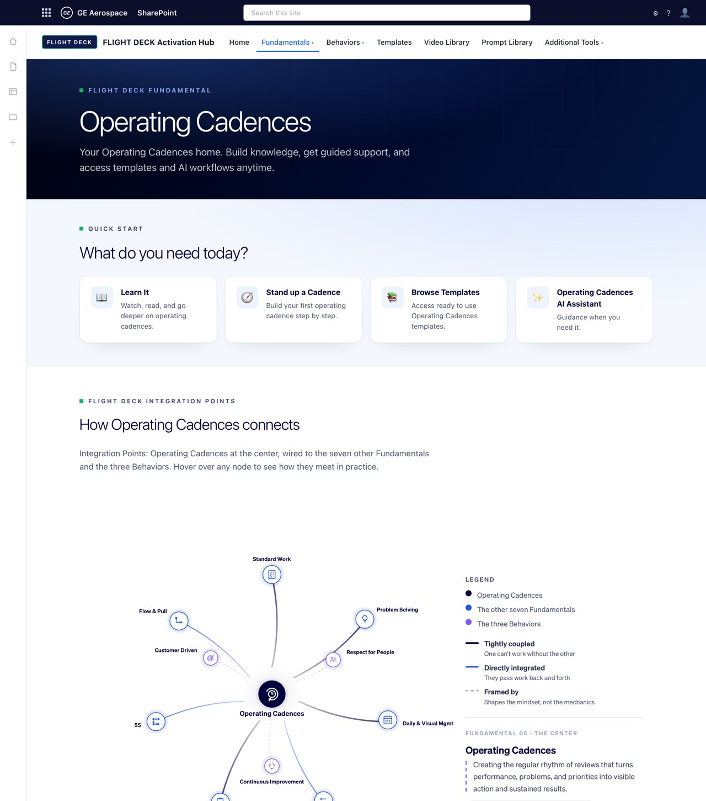
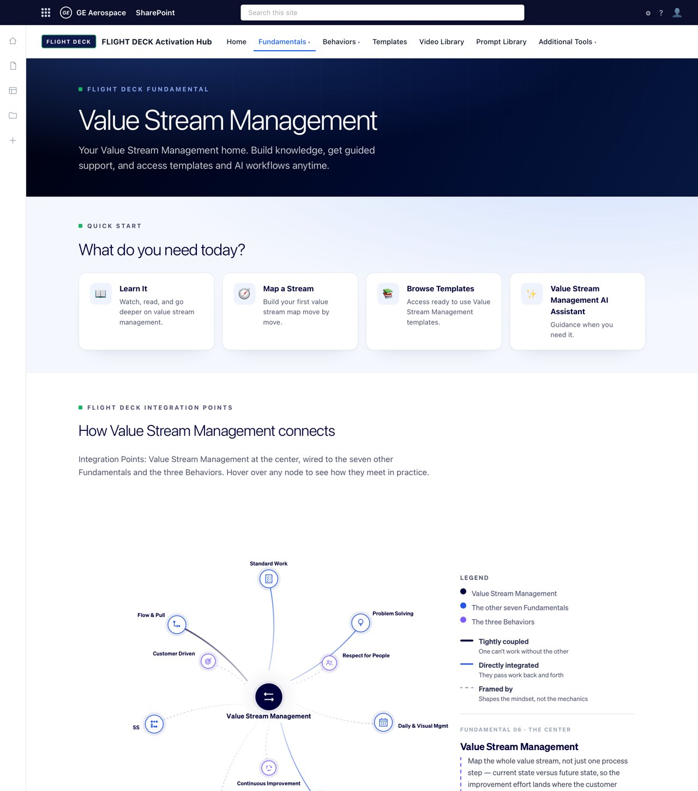
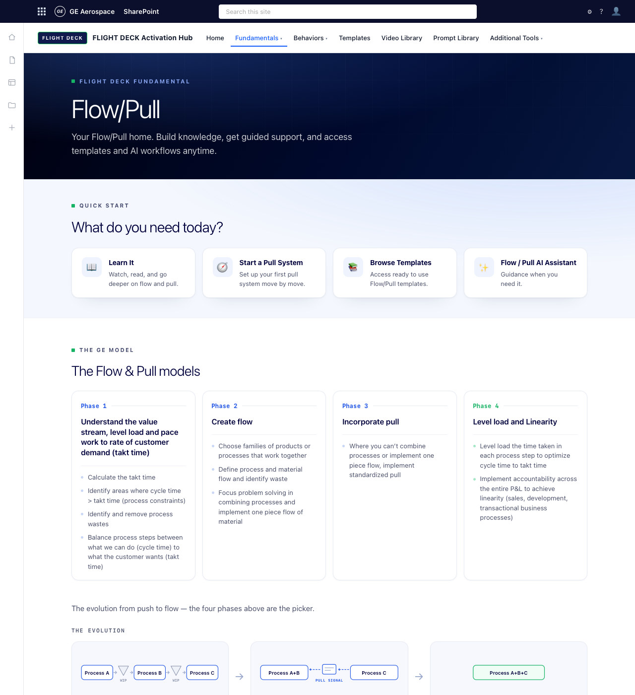

GE can highlight one link per banner, so the banner carries a single button and the fanned pages behind it carry the range. Placed as markup the button is a real link; the flat art beside it is for anywhere a carousel needs one image.
FLIGHT DECK
Action Planning and Standard Work Pages
Your Action Planning and Standard Work homes. Build knowledge, get guided support, and access templates and AI workflows anytime.





GE can highlight one link per banner, so the banner carries a single button and the fanned pages behind it carry the range. Placed as markup the button is a real link; the flat art beside it is for anywhere a carousel needs one image.
FLIGHT DECK
Problem Solving and 5S Pages
Your Problem Solving and 5S homes. Build knowledge, get guided support, and access templates and AI workflows anytime.
GE can highlight one link per banner, so the banner carries a single button and the fanned pages behind it carry the range. Placed as markup the button is a real link; the flat art beside it is for anywhere a carousel needs one image.
FLIGHT DECK
Daily & Visual Management and Operating Cadences Pages
Your Daily and Visual Management and Operating Cadences homes. Build knowledge, get guided support, and access templates and AI workflows anytime.

GE can highlight one link per banner, so the banner carries a single button and the fanned pages behind it carry the range. Placed as markup the button is a real link; the flat art beside it is for anywhere a carousel needs one image.
FLIGHT DECK
Flow/Pull and Value Stream Management Pages
Your Flow/Pull and Value Stream Management homes. Build knowledge, get guided support, and access templates and AI workflows anytime.


Before this ships
- The copy above is a Bttr draft. Anam owns final wording on anything that goes out on the hub.
- The button needs its destination. Send the SharePoint URL for the Action Planning page and it gets baked into the chosen file.
- The screenshot is the live Action Planning page as of 13 August 2026. Options 01 through 05 will need a re-shoot if the page changes before the card goes up.
- Still options ship as 3200 × 1872 PNG, the animated one as a 5 second MP4 and a looping GIF. Ask if SharePoint wants a second crop for the mobile carousel.